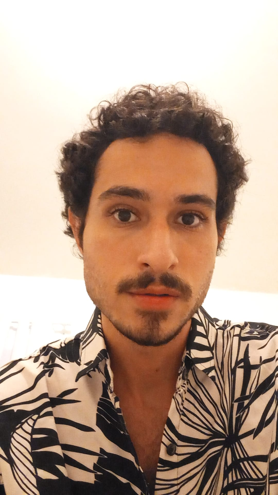

Uma breve biografia
 Ravi Antunes aos 27 anos. 2021.Bio
- Idade: 27 anos
- Natural de Recife, Brasil.
- Pisciano
Nacido no Recife em 1994, Ravi Antunes teve uma infância tranquila e sonhadora. Desde muito cedo, sempre pensou no que faria quando crescesse. Por se importar bastante com o meio ambiente, primeiramente quis ser gari(!) ou biólogo, mas aos 11 anos de idade decidiu ser professor de inglês. Se expressar em um idioma completamente diferente, com outros sons e intonações, era fascinante. Obstinado, cresceu e se preparou para encarar o desafio de ensinar inglês e, uma semana antes de completar 18 anos, deu sua primeira aula de inglês na Wizard, empresa na qual passou três anos trabalhando.
Se desenvolvendo cada vez mais na área, se graduou em Letras - Licenciatura em Inglês na Universidade Federal de Pernambuco (UFPE), e chegou a trabalhar em cursos de inglês, escolas regulares, enquanto freelancer, tradutor e voluntário. No ano de 2019 fez seu primeiro concurso público, no município de Belo Jardim-PE, no qual passou em primeiro lugar. No entanto, até hoje não foi convocado, devido a manobras políticas dos governantes.
Uma virada de chave
Após uma carreira de nove anos, se sentindo desvalorizado no meio educacional, Ravi decidiu mudar de vez sua vida, ingressando na área tecnológica! Estudando na Kenzie Academy para se tornar um Desenvolvedor Web Fullstack, agora as perspectivas mudaram!
Presente e aspirações
Atualmente Ravi trabalha como professor particular de inglês e dá aulas online, se utilizando de várias ferramentas, como:
entre outras.Agora, como um estudante de programação, a intenção é não só utilizar websites como consumidor, mas também produzi-los! O foco no momento está sendo aprender cada vez mais, para que em um breve futuro possa colaborar com empresas e pessoas, desenvolvendo ainda mais suas habilidades.
Quanto às redes sociais, Ravi não tem o hábito de postar bastante em suas redes. Porém, estar mais presente na rede Linkedin é um objetivo de curto prazo. Atualmente, as redes sociais mais usadas, em ordem crescente, são:
- TikTok